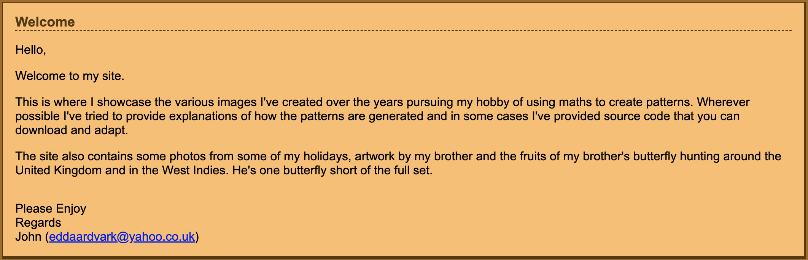
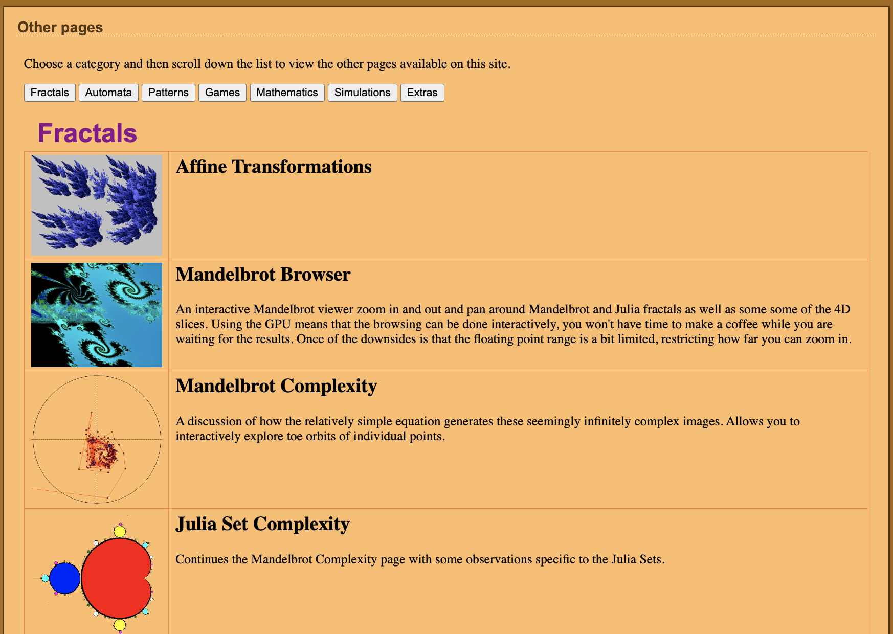
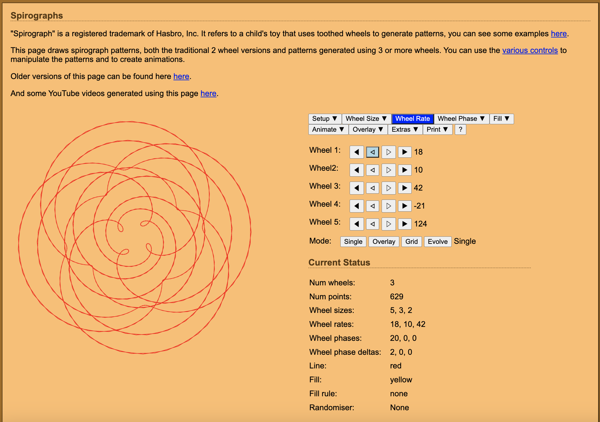
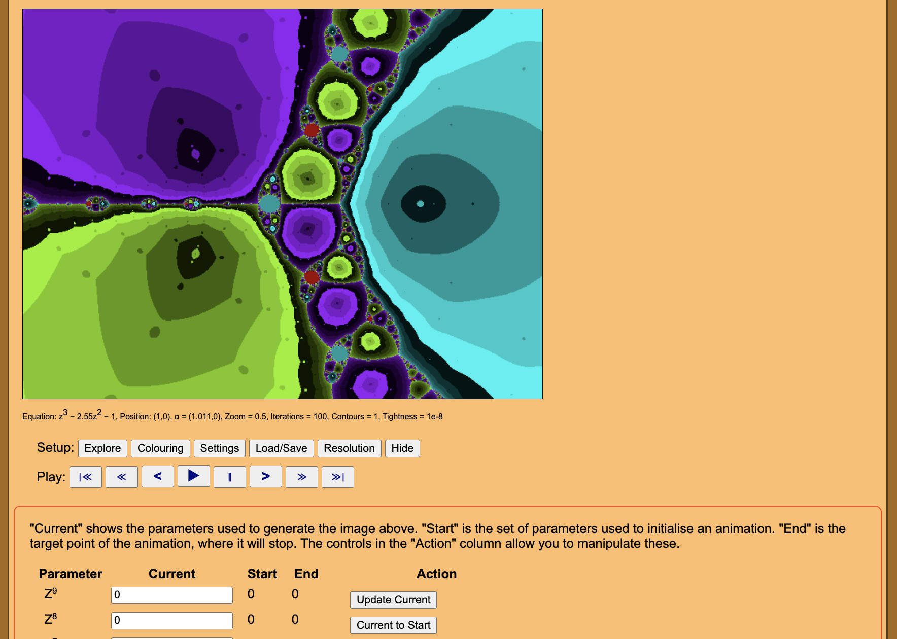
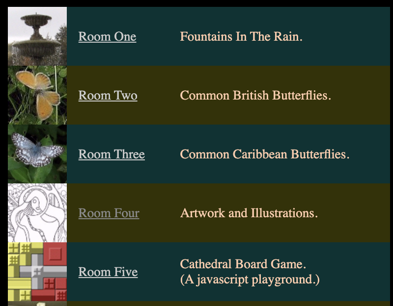
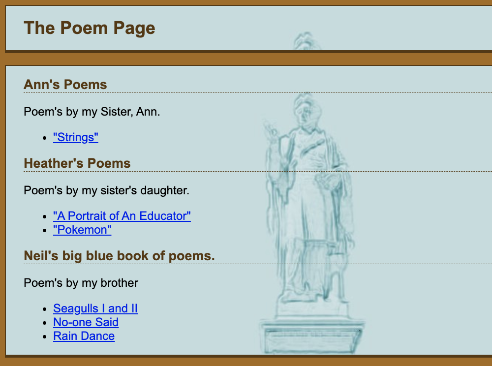

My website as a home
Back in Spring 2021, I was browsing the web for an online tool that would let me generate spirograph-like vector drawings, which I was hoping to incorporate in a project. My search led me to the perfect such generator on “JW’s Pictures and Patterns Site”, the personal website of one John Whitehouse. I hope you enjoy this letter, found at the top of his home page, as much as I did:

As one would expect, John’s website is full of experiments with mathematically generated imagery, many of them interactive like the spirograph page.



However, as you may have noted from his letter, it’s also a home for many other things: holiday photos, artwork by various relatives, his PhD thesis, and other paraphernalia.


“Home” struck me as a good descriptor for John’s website1. For one thing, it’s as much a place for him as it is for us, the visitors. He’s taken care to meticulously organize the site and document the math and technology behind each project. And yet, the only point of contact he might have with an ‘audience’ is his listed email and real-life acquaintances. Clearly his effort has something to do with his personal fascination with the subject matter, and any enjoyment he gets from discussing it (no matter who’s reading).
The site is also like a home in that it’s a collection of many things which are unified only by the person who collected them. I feel as if someone is giving me a tour of their apartment: I’m looking at the papers on his desk, the notes stuck to his fridge, an album of butterfly photos taken by his brother, and so on. Sure, he probably tidied up before I arrived, and he’s choosing what to show me. But nonetheless, entering the space has given me a rich portrait of its occupant. As far as I could find, John doesn’t have a formal “about” page, but he doesn’t need one: I see him far more clearly through the relationships and activities he’s chosen to share.

I’m talking about this, of course, because I’d like to use “home” as the operative analogy for my own website.
With any analogy, you choose which properties of the subject to apply to the object of comparison, and which to ignore2. What I find significant about homes in this context is that they don’t exist primarily for display: rather, they’re designed around the habits and values of their occupants. Analogously, I want to use my website to order and document my own activity, and to interact with things and people that I care about.
Still, a website and a home are importantly different in that the former is intended for public exposure, whereas the latter is grounded in private life. But maybe we can relate the public nature of websites to a public dimension of homes: hosting visitors. Typically we don’t show our house guests everything — we keep many things private and clean up before they arrive. Moreover, we’ve made prior decisions about our furniture and decor with future guests in mind. So homes can certainly be curated for the public eye; but crucially, they maintain their function as living spaces. I find it generative to consider websites as a similar conjunction of public and private activity: by thinking about how visitors will receive the things that I publish, I’m compelled to produce more and refine the things that I make. At the same time, the website remains my space and is subservient to no other end.
This model feels importantly different to me from typical approaches to online presence. I’m not interested in making a website that acts as a business card, a biography, or a portfolio (I have a different website for these). And I’m not interested in expressing myself through the prescribed structure3 of this or that social media platform. But I am interested in having a space under my creative control to share and examine my life.
The work website
I do have another website which, in a more conventional vein, showcases my projects and includes a biography with professionally relevant information4. That I’ve separated work.nicochilla.com from nicochilla.com might invite the impression that I’m making a separation between “work” and “life” — that’s not my intention. I’m lucky to be able to do professional work which on the whole I enjoy and believe in, and I like to imagine that the themes running through my career are continuous threads in my life at large.
So why the distinction? Because my work website exists to serve a well-defined social function. In the specific context of representing myself to employers and colleagues, it makes sense to surface particular pieces of information and follow certain conventions5. On the other hand, with this website I have the freedom to organize and present things according to different logics.
It’s often remarked that websites have an ephemeral quality — they’re in a constant state of revision6. This is another way in which I think they can be remarkably similar to homes, where furniture is moved around, messes are made and cleaned, and decorations come and go. Insofar as this website is an act of self-representation, I hope it embraces that spirit and identifies me with an ever-changing body of disparate elements.